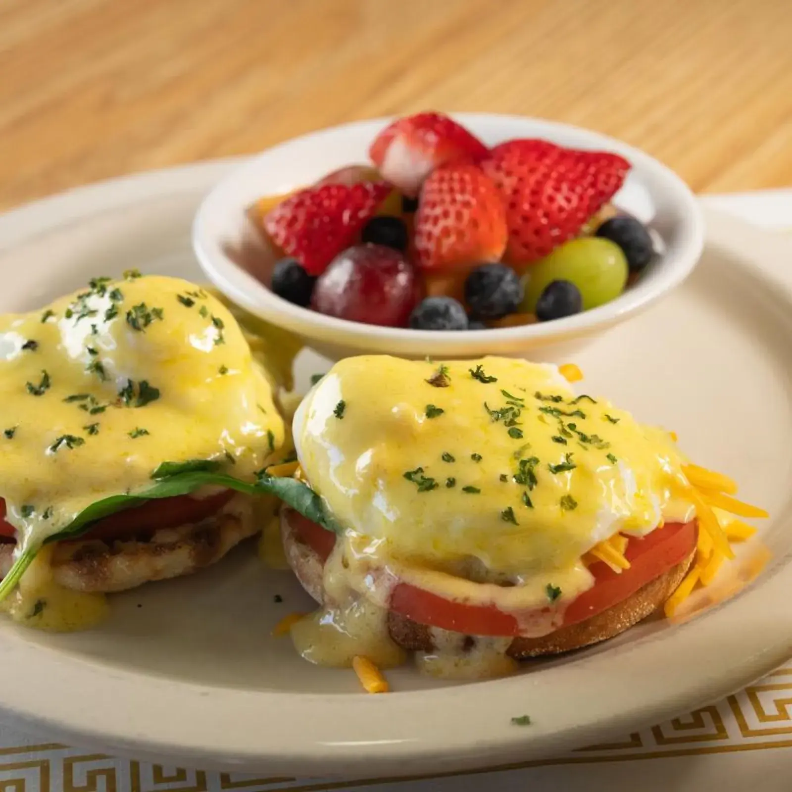
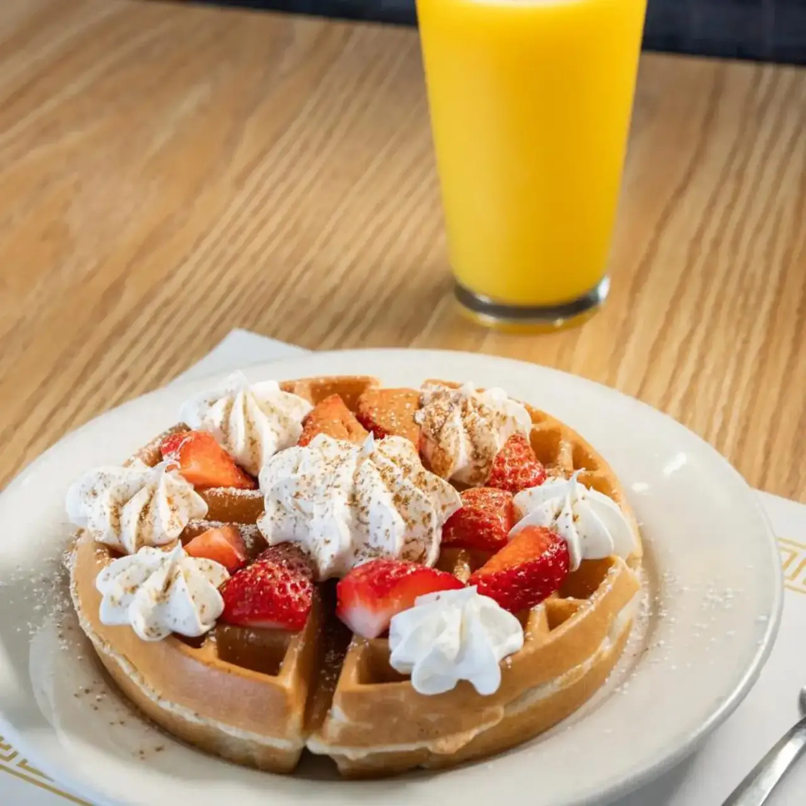

Benedicts and breakfast plates
Florentine, Mediterranean, Mexican and meat lovers benedicts, plus steak and eggs and the sampler with eggs, bacon, sausage and ham.

Ranch House · Carrollwood
Ranch House Restaurant serves Carrollwood from Tampa.
Coming from Carrollwood? Ranch House Restaurant is in Tampa, on West Hillsborough Avenue. Breakfast and lunch every day until 2 PM.
What we serve
Favorites from the kitchen.

Florentine, Mediterranean, Mexican and meat lovers benedicts, plus steak and eggs and the sampler with eggs, bacon, sausage and ham.
A large biscuit with sausage gravy, the Cindy Lee, or chipped beef on toast.

Waffles cooked right, plus stuffed French toast, pancakes and a Monte Cristo.
4.3 ★ · 678 Google reviews
GUEST CHECK№ 1Fantastic breakfast! Fantastic service! Very friendly staff. Coffee ☕️ cups never, NEVER went empty. Biscuits and gravy were fantastically delicious. Fair priced and couldn’t ask for more than received. Everyone left nice and full 👏👏
GUEST CHECK№ 2We wanted to check out a good breakfast place while staying in Tampa. Ranch House Restaurant had good reviews. They were not wrong! At first glance, the strip mall it is located in is not the most up to date. Located at one end of it, parking was easy. We got a table right away & our server was prompt. She was so nice & friendly!! Unfortunately, I did not catch her name.
GUEST CHECK№ 3Visiting Tampa and didn't want to go to the chain breakfast restaurants. This place had good looking food photos and good reviews. We were not disappointed. The food was seasoned, spicy and full of flavor!!! 10 stars, will be returning.
GUEST CHECK№ 4Had a great meal at the Ranch House. My waffle and bacon were cooked perfectly. My friend got the burger with the egg and really liked it. Looking for no frills good food, come get a meal here.
GUEST CHECK№ 5Good standard place. My wife's quesadilla was great and filling. My omelet was tiny(3 eggs?). Home fried chunks were good, as was the coffee.
Open every day from 6:30 AM (7 AM Sundays), closing at 2 PM. Call ahead or just come in.